I am a Software Engineering student with a passion for leading and collaborating on challenging projects. Through my academic training and practical experience, I have developed key skills in programming, systems design, and project management. Outside the classroom, I channel my creativity into creating content for my YouTube channel, an activity that not only complements my technical skills but also provides me with a vital balance and an innovative perspective. With a constant desire to learn and grow, I am always looking for new opportunities and challenges in the dynamic world of technology.